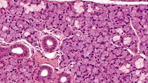

Setiap organisme memiliki sel-sel dengan beragam ukuran yang mencerminkan fungsi yang dilakukannya. Pada organisme yang tersusun atas banyak sel, sel-sel ini saling bergantung dan membentuk kelompok yang disebut jaringan. Jaringan ini memungkinkan organisme untuk menjaga kelangsungan hidupnya melalui kerja sama dan interaksi antarsel.Tumbuhan memiliki berbagai jenis jaringan, termasuk pembuluh kayu yang berfungsi mengangkut air dan nutrisi dari akar ke daun, serta pembuluh tapis yang mengangkut zat makanan dari daun ke seluruh bagian tumbuhan. Di sisi lain, hewan, termasuk manusia, juga memiliki beragam jaringan seperti jaringan epitel yang melapisi permukaan tubuh, jaringan otot untuk gerakan, jaringan tulang rawan yang memberikan struktur dan fleksibilitas, dan jaringan saraf untuk transmisi sinyal dan koordinasi aktivitas tubuh. Semua jenis jaringan ini bekerja bersama-sama untuk memastikan organisme dapat berfungsi dengan baik dan menjaga keseimbangan internalnya.

Kembali ke Daftar Materi